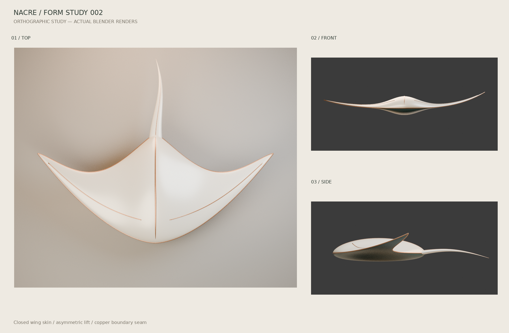

NO. 002 — ORGANIC SURFACE
潮翼 A quiet current.
将潮汐的弧线，凝固成一片翼。
连续曲面 · 非对称轮廓 · 陶瓷与铜

正在准备交互模型当前为 Blender 实际渲染预览
NACRE / OBJECT 002
BLENDER 实际渲染 · 正在准备交互


SILHOUETTE / VOLUME / BALANCE
换一个角度，看见结构。

静态图版，不受浏览器 WebGL 支持影响。点击查看原图。
OPEN STUDIO / 制作档案
不只看见，也能拆解。
模型、源码与复盘始终可达。
静态预览不替代实时交互验收。